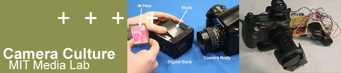
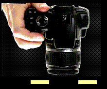
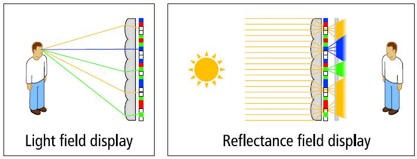
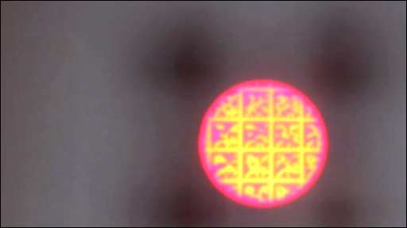
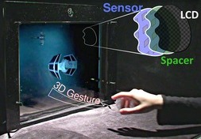
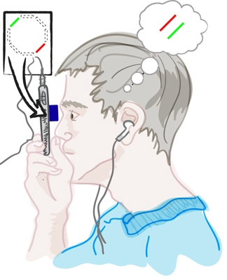
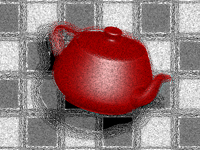

Home | News | Join Us | People | Projects | Publications | Talks | Courses
Locating and Classifying Fluorescent Tags
Behind Turbid Layers Using Time-Resolved Inversion
| We demonstrate recovering location and lifetime of fluorescence markers hidden behind turbid media. With applications for non-invasive medical imaging. |
|
|
Paper in Nature Communications
"Locating and classifying fluorescent tags behind turbid layers using time-resolved inversion" Nat. Commun. 6:6796 doi: 10.1038/ncomms7796 (2015),
Guy Satat, Barmak Heshmat, Christopher Barsi, Dan Raviv, Ou Chen, Moungi G. Bawendi, and Ramesh Raskar
http://www.nature.com/ncomms/2015/150413/ncomms7796/full/ncomms7796.html, [Local copy: PDF , Supplement]
Presented in CLEO 2014:
http://www.opticsinfobase.org/abstract.cfm?uri=CLEO_SI-2014-JTh2A.43,Team
Guy Satat, MIT Media Lab (guysatat(at)mit.edu)Barmak Heshmat, MIT Media Lab (barmak(at)mit.edu)
Christopher Barsi, MIT Media Lab (cbarsi()at)mit.edu)
Dan Raviv, MIT Media Lab (darav(at)mit.edu)
Ou Chen, MIT Department of Chemistry
Moungi G. Bawendi, MIT Department of Chemistry
Ramesh Raskar, MIT Media Lab (raskar(at)mit.edu)
Abstract
The use of fluorescent probes and the recovery of their lifetimes allow for significant advances in many imaging systems, in particular medical imaging systems. Here, we propose and experimentally demonstrate reconstructing the locations and lifetimes of fluorescent markers hidden behind a turbid layer. This opens the door to various applications for non-invasive diagnosis, analysis, flowmetry and inspection. The method is based on a time-resolved measurement which captures information on both fluorescence lifetime and spatial position of the probes. To reconstruct the scene the method relies on a sparse optimization framework to invert time-resolved measurements.This wide-angle technique does not rely on coherence, and does not require the probes to be directly in line of sight of the camera, making it potentially suitable for long-range imaging.
Applications
The main application of our method is for in-vivo medical diagnosis. Today fluorescent markers are used as contrast agents in standard CT scans. They are also used during biopsies. Our suggested method enables "in-vivo biopsy".For example, by locating the fluorescent marker we know where a tumor might be, and fluorescence lifetime will classify if the tumor is malignant or benign.
Frequently Asked Questions
What are we trying to do?
Allow non-invasive in-vivo detection and classification of tumors.
How is diagnosis of tumours performed today?
Doctors will use medical imaging techniques (like CT) to detect possible locations of tumors. Classification of a tumor as malignant or benign usually requires extracting a piece of that tissue for biopsy and analysing it under a microscope. A widely used method for such analysis is known as FLIM (florescence lifetime imaging), where the fluorescence lifetime provides information on the surrounding tissue. Unfortunately, FLIM requires extraction of the tissue from the body.
What's new in our approach?
Our method allows to measure the florescence lifetime while the fluorophore is embedded within the tissue. Thus, there is no need for invasive measures such as tissue extraction. To accomplish this, our method is based on a time-resolved measurement and signal processing algorithms to localize and classify the fluorescent tags behind scattering layers.
What's the potential impact?
The long term goal can potentially shorten diagnosis cycles and reduce the number of invasive procedures, thus improving the overall health diagnosis process and reduce costs within the healthcare system.
What are fluorescent markers?
Fluorescent markers are widely used as contrast agents in CT and MRI scans. They are also an important tool when performing biopsies.
What is fluorescence lifetime?
When the fluorophore is excited it takes some time until the fluorescence is emitted. This time is known as the fluorescence lifetime (which is an average, since the process is random). This time can be a function of the environment, and so it is an important tool that can assist in classifying the fluorophore environment.
What is a streak camera?
A streak camera is a device that captures time information along a line in space (each column corresponds to a different location along the line, and each row corresponds to a different time). When a light pulse enters the instrument through a narrow slit along one direction, it is deflected in the perpendicular direction, so that photons that arrive first hit the detector at a different position compared to photons that arrive later. The resulting image forms a “streak” of light. Streak tubes are often used in chemistry or biology to observe milimeter-sized objects.
What's the depth limitation of the system?
In this project we demonstrated the concept on a 0.7mm thick opaque glass. However, due to the great signal-to-noise properties of our algorithm, it can work in deep tissues as well. The limitation on depth is due to time blur from the scattering, which should be on shorter time scales than the fluorescence lifetime.
Why patches?
Fluorescence markers tend to generate sparse images. We use a sparsity prior as part of the reconstruction algorithm to make it more robust.
Recent projects in Camera Culture group
|  |
 |
 |
 |
 |
 |
| Computational Photography |
6D Display Lighting and Viewpt aware displays |
Bokode Long Distance Barcodes |
BiDi Screen Touch+3D Hover on Thin LCD |
NETRA Cellphone based Eye Test |
GlassesFree 3DHDTV |
Home | News | Join Us | People | Projects | Publications | Talks | Courses